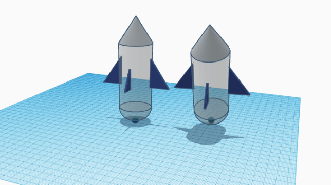

Throughout the past week, we've done a lot in Engineering class. It took a while to get everything started but once we did, everyone was able to create our own website. We were also able to go through a few slides about safety and the engineering process and start our first challenge, where we had to navigate a marble to a bucket with pipes. Even though our group failed miserably, it was still probably my favorite part of the week. This weekend, I'm planning to practice some new songs on electric guitar. My dad also got a new PS5 so I'm able to bring his PS4 to my mom's house.
9/1/23 - This is my second journal entry
I've learned that it's important to save our progress on our website. I was adjusting the size of my images and when I found the right size, I closed the tab but forgot to save, meaning I had to readjust everything. This week, we started our next project. We have to make a Rube Goldberg machine, which starts off small but causes a huge chain reaction to complete a goal. Our challenge for this week was involving Tinkercad. We had to create our favorite home appliance on the website and the winner got a KitKat. I ended up making a toaster which a lot of people did.
9/8/23 - This is my third journal entry
Overall, my week went pretty well. The rube goldburg project was somewhat hard to do since we only have 3 people, but we were able to do it. I learned a lot about Tinkercad that I didn't know before since we were working on it for a few days. The goal of our rube goldburg machine is to start by rolling a baseball bat and end up popping a balloon. We ended up using 5 simple machines (ramp, inclined plane, pulley, wheel, and wedge). I think the hardest part about building the real version will be the pulley since there's so much to it and I'm not entirely sure if the cardboard alone will be able to hold it all.
9/22/23 - This is my fourth journal entry
Last week, we were working on our Rube Goldberg machines. However, we were unable to finish them because we made ourselves way too much work on Tinkercad. We ended up replacing everything after the pulley with a wedge to finish the project. I made the ramp, the wedge, and part of the ramp. If we had made the Tinkercad project a bit smaller, we could've finished it. This week, we had some issues with the Wifi router and were unable to post website updates until now. Instead of doing website updates, we did a few challenges. The first one we did was making a floatation device with a single piece of paper, which me and my partner did decent at. The next challenge was making the letter E, which I didn't do good on because I thought we weren't supposed to add images. From the floatation challenge, I learned that surface area is the most important thing when trying to hold weight. We also learned a bit about computer engineering which I found interesting.
9/28/23 - This is my fifth journal entry
This week, we learned about the parts of a computer. I found it interesting since I know a bit more about what's going on inside the computer as I'm using it. This week, we dissected a computer and put it back together. I learned a lot about the functions of each part in computers. This weekend, I'm going to Vegas to visit my family
10/5/23 - This is my sixth journal entry
This week, we learend about Bioengineering. We created a cardboard hand that could (kind of) pick up a water bottle. The main part of Bioengineering I found interesting was Biomimicry, which is the study of mimicking biology and living organisms to benefit our devices. Our hand used primarily cardboard and rubber bands. We used tape to connect the rubber bands to a cardboard piece that fit around our fingers. If I could improve my hand, I would use string instead of rubber bands since rubber bands are thick and flexible. This weekend, I'm not going to homecoming but instead, I'm going to my lola's house out in Victorville.
10/13/23 - This is my seventh journal entry
This week, we started our new topic on Aerospace Engineering. I learned that this topic includes thermodynamix, aerodynamix, and propultion. I also learned about the 4 forces on a flying object, thrust, drag, lift, and weight. So far in this class, I've enjoyed the challenges and the frequent projects.
BOM for bottle rocket 
10/20/23 - This is my eighth journal entry
This week, we continued to learn about Aerospace Engineering. The main things we learned were the 4 forces on an aircraft (weight, lift, drag, thrust) and aeronautical/astronautical engineering. For our bottle rocket, we made a large triangle wing attached to the top with support and some smaller wings attached to it. However, we applied too much water pressure which led to the bottle spinning out of control.
10/29/23 - This is my ninth journal entry
This week, we learned about environmental engineering which I thought was cool. We learned about filtering stuff and we did a project on it but I was absent so I couldn't do it. This weekend, I went to Henderson Nevada until Saturday and it was cool.
11/9/23
- This is my tenth journal entry
Throughout the past 2 weeks, we've been learning about electrical engineering. The main concept we've been focused on is breadboarding. I found it pretty interesting but also difficult.